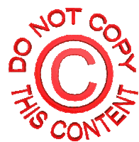

| Autorské právo poskytuje príslušnému vlastníkovi výlučné právo na používanie daného diela (s určitými výnimkami). Keď niekto vytvorí pôvodné dielo, ktoré je obsahom fyzického média, automaticky k nemu nadobúda autorské práva. |
Autorským právom je možné chrániť mnohé diela. Patria medzi ne napríklad:
| Držitelia autorských práv majú právo kontrolovať väčšinu prípadov použitia svojich diel. Za určitých okolností je možné použiť dielo chránené autorskými právami bez porušenia jeho autorských práv. |
Ak nemáte povolenie používať dielo chránené autorskými právami,
váš obsah môže byť odstránený, a to aj v týchto prípadoch:

| Sťahovanie (Vyhotovenie kópie) |
|---|
| Pre vlastnú potrebu: Sťahovanie filmov, seriálov alebo hudby pre osobnú, nekomerčnú potrebu je na Slovensku legálne výhradne vtedy, ak pochádza z legálneho zdroja. Sťahovanie z neautorizovaných úložísk a pirátskych stránok porušuje zákon. |
| Výnimka (Softvér a hry): Počítačové programy, aplikácie a videohry majú v zákone špeciálny režim. Ich sťahovanie z neoficiálnych zdrojov (cracknuté verzie) je nelegálne vždy, aj keď ich máte iba pre seba. |
| Šírenie (Nahrávanie, zdieľanie, distribúcia) |
|---|
| Prísny zákaz: Akékoľvek verejné šírenie, nahrávanie (upload) na úložiská, posielanie skupinám ľudí alebo uverejňovanie na vlastnom webe bez licencie je nelegálne. |
| Postihy: Neoprávnené šírenie chránených diel zakladá občianskoprávnu zodpovednosť (náhrada škody) a pri väčšom rozsahu napĺňa skutkovú podstatu trestného činu porušovania autorského práva podľa Trestného zákona. |